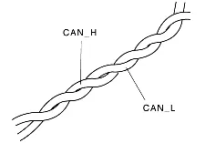
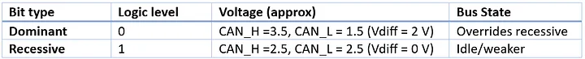
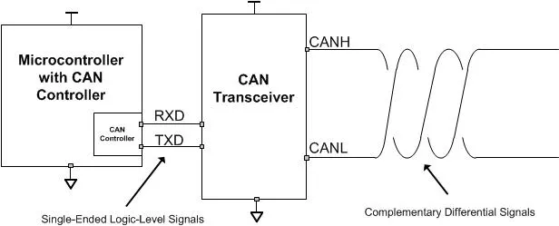
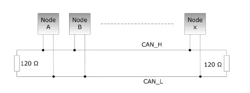
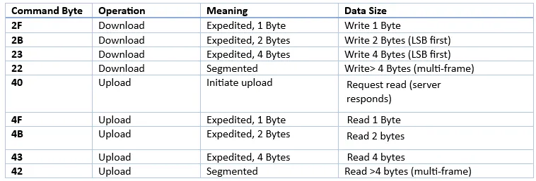
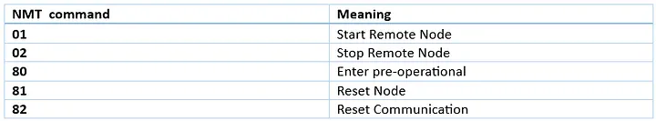

The CAN protocol (Controller Area Network) is a robust serial communication protocol primarily designed for real-time, reliable data exchange between multiple electronic control units (ECUs) in embedded systems. It was originally developed by Bosch in the 1980s for use in the automotive industry, but it is now widely used in industrial automation, robotics, aerospace, and medical devices as well. The CAN bus uses twisted-pair wiring (CAN_H and CAN_L) mainly for signal integrity and noise immunity.

Unlike normal digital communication (where logic 0 = low voltage and logic 1 = high voltage), CAN uses dominant and recessive bits with differential signaling.

So, in CAN:
- Logic 0 = Dominant (strong, wins)
- Logic 1 = Recessive (weak, can be overridden)
What is a CAN transceiver?
A CAN transceiver is the physical layer interface between the CAN controller (inside the microcontroller/ECU) and the CAN bus (the twisted pair wires: CAN_H & CAN_L).
It converts digital logic signals from the controller into the differential voltages required on the bus — and vice versa.
Microcontrollers usually work at 3.3 V or 5 V TTL logic. But CAN bus works with differential signaling (~1.5 V — 3.5 V between CAN_H and CAN_L). The transceiver translates between these domains.

Standard CAN Topology
Bus Topology (Recommended): All nodes are connected to a two-wire twisted pair (CAN_H & CAN_L). The bus must be terminated with 120 Ω resistors at both ends (to prevent signal reflections). Nodes connect to the bus via short “stubs.” Works best for high-speed CAN (ISO 11898-2, up to 1 Mbps / CAN FD up to 5-8 Mbps). The important Rules are:
Termination:
- Always place 120 Ω resistors at both ends of the main bus.
- Effective resistance of the bus = ~60 Ω (since 2 × 120 Ω in parallel).
Stub Length:
- Keep short (< 30 cm for high-speed CAN).
- Longer stubs = more reflections = communication errors.
Cable Length vs Speed:
- At 1 Mbps → Max bus length ≈ 40 m.
- At 125 kbps → Max bus length ≈ 500 m.
- At 50 kbps → Can go up to 1 km+.

CAN properties: Wired, Serial, Asynchronous, BroadCast, Half Duplex, Ack method, Message Based Protocol, Message Filtering, CSMA-CA (collision avoidance)
Types of CAN Frames
There are 4 types of frames in Classical CAN:
- Data Frame → Used to transmit actual data (most common).
- Remote Frame → Requests data from another node.
- Error Frame → Signals error detection on the bus.
- Overload Frame → Used to inject a delay between data/remote frames if a node is overloaded.
Structure of a CAN Data Frame

1. Start of Frame (SOF) → 1 bit
- Always dominant (0).
- Marks the beginning of a frame and syncs all nodes.
2. Arbitration Field
- Standard CAN (11-bit ID): 12 bits
- Extended CAN (29-bit ID): 32 bits
- Contains the Message Identifier (priority of message).
- Also includes RTR bit (0 = data frame, 1 = remote request).
- Arbitration ensures that the lowest ID (highest priority) wins if multiple nodes transmit.
3. Control Field → 6 bits
- Contains the Data Length Code (DLC) indicating the number of data bytes (0-8 for Classical CAN).
- Includes other control bits depending on the frame type.
4. Data Field → 0–64 bits (0–8 bytes)
- Actual payload data.
- Sent MSB first.
- CAN FD allows 0–64 bytes.
5. CRC Field → 16 bits
- 15-bit CRC sequence + 1-bit CRC delimiter.
- Used for error detection (receiver checks integrity).
6. ACK Field → 2 bits
- ACK Slot (1 bit): Sender sends recessive, receiver overwrites with dominant if frame is valid.
- ACK Delimiter (1 bit): Always recessive.
- Ensures at least one node acknowledged the message.
7. End of Frame (EOF) → 7 bits
- All recessive (1).
- Marks the end of the frame.
Example
We want to send an SDO message to Beckhoff CAN module to turn on the first digital output. Here is the reference for the documentation of this module: Beckhoff CAN Module Documentation
Based on this documentation, the index of the digital output block is 6200. The sub index 01 is the first digital output block. To turn on the first bit, we have to make 1 the LSB of the data frame.
If the node id of the CAN module is 0x10, we have:
610#2f 0062 01 01 00 00 00
600 + node id in hexadecimal: 610 in arbitration field
2f: write message in control data field
Others are the data field: LSB: 00 62 01 01 00 00 00: MSB

Response
The response id is 0x580+Node Id. So here the response starts with 590 (because the node id was 0x10). If the message abort, the first bytes in the response is 80. So if you see the following message, means your request is aborted: 0x590#80 xx xx.
Network Management (NMT) service in CAN
NMT is one of the core CANopen communication services, used to control the state of all CANopen devices (nodes) on the network. It provides a way for a master (NMT master) to control the operating state of other devices (NMT slaves). Used for starting, stopping, resetting nodes, or putting them into pre-operational mode.
NMT Message Format: CAN ID (fixed to 0x000) + Command Specifier (1 Byte) + Node ID (1 Byte).
Example: cansend can0 000#0108
Means: 01: start remote node (go to operational mode), 08: the slave with node 0x08.
